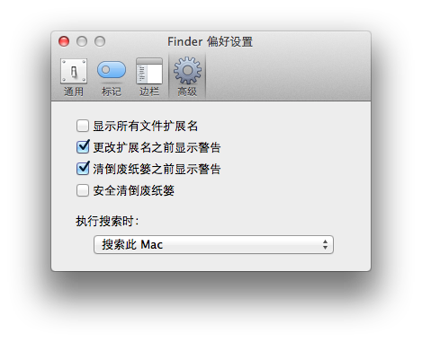
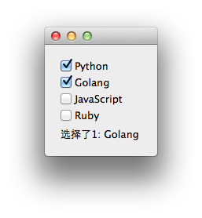

如上图所示的需求，需要创建4个QCheckbox，一种做法是直在Designer中设计，这种做法适合知道选项的情况。还有种情况是这些选项是通过配置文件读出来的，或者是数据库中取出来，或者其他情况得到的，这时候就需要动态创建了。
解决思路是循环一个列表，创建对象，插入布局即可。这里稍微增加一些复杂性，对所创建的QCheckbox对象进行信号和槽的绑定，并处理信号，这时候我们可以通过sender()方法来获得是哪个对象发出的信号。
其他的控件类似，这里就用QCheckbox做例子了。
下面是完整代码(PyQt4/Python2.7)：
# -*- coding: utf-8 -*-
from PyQt4 import QtGui, QtCore
class Widget(QtGui.QWidget):
def __init__(self, parent=None):
QtGui.QWidget.__init__(self, parent)
layout = QtGui.QVBoxLayout()
items = [(0, 'Python'), (1, 'Golang'), (2, 'JavaScript'), (3, 'Ruby')]
for id_, text in items:
checkBox = QtGui.QCheckBox(text, self)
checkBox.id_ = id_
checkBox.stateChanged.connect(self.checkLanguage)
layout.addWidget(checkBox)
self.lMessage = QtGui.QLabel(self)
layout.addWidget(self.lMessage)
self.setLayout(layout)
def checkLanguage(self, state):
checkBox = self.sender() # 获取发射信号的对象
if state == QtCore.Qt.Unchecked:
self.lMessage.setText(u'取消选择了{0}: {1}'.format(checkBox.id_, checkBox.text()))
elif state == QtCore.Qt.Checked:
self.lMessage.setText(u'选择了{0}: {1}'.format(checkBox.id_, checkBox.text()))
if __name__ == '__main__':
import sys
app = QtGui.QApplication(sys.argv)
widget = Widget()
widget.show()
sys.exit(app.exec_())
效果截图：
